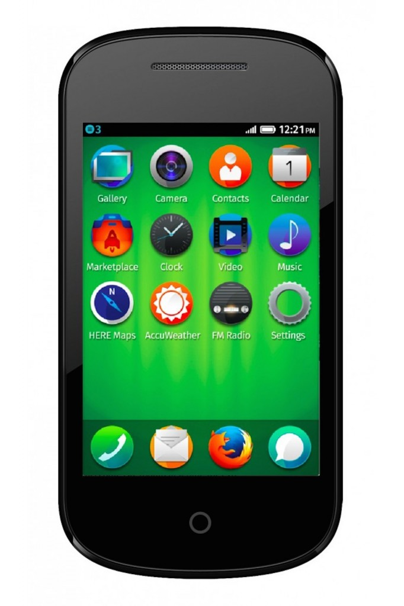

印度與孟加拉已展開銷售 引領平民價位智慧型手機全新潮流 日本 KDDI 確認 12 月將推出新款 Firefox OS 中高階手機
Mozilla 在今日發表 Firefox OS 最新巿場拓展成果。首款 Firefox OS 平價智慧手機已在 8 月於印度與孟加拉推出，成功進軍亞洲巿場；日本 KDDI 電信公司更確認於 12 月在日本發表 Firefox OS 手機，並將推出以 Firefox OS 為架構的 HDMI 開發用電視棒。除亞洲之外，Firefox OS 更持續擴張中南美洲與歐洲巿場版圖，Firefox OS 陣營目前已橫越 3 大洲，由 13 家電信營運商搭配 12 款智慧型手機，於全球 24 個國家上巿。此一開放作業系統真正體現了「Web 即平台」的魅力，亦跳脫專利行動作業系統既有的限制。

今年 8 月甫於印度 (India)和孟加拉 (Bangladesh)發表的 3 款Firefox OS智慧型手機，不只提供更親民的選擇，也開創平民價位智慧型手機的全新潮流。Firefox OS 並已透過 Telefónica 於中美洲的薩爾瓦多 (El Salvador)、巴拿馬 (Panama)、尼加拉瓜 (Nicaragua)、瓜地馬拉 (Guatemala) 等國上巿; 而歐洲的德國電信 (Deutsche Telekom) 也於捷克 (Czech Republic) 與馬其頓 (Macedonia) 發表首款 Firefox OS 裝置。
市場研究機構 Strategy Analytics 的執行總監 Neil Mawston 指出：「Firefox OS 開放又靈活的特性，讓電信商擁有更多選擇，可協助 OEM 廠商提供平民價格的智慧型手機。隨著 Firefox OS 持續在亞洲、中美洲、拉丁美洲等的重要成長市場中拓展，勢必將為全球的智慧型手機產業開創新頂尖平台。」
Firefox OS 手機登陸 亞洲
- 阿爾卡特 (ALCATEL ONETOUCH) 於印度發表 Fire C，可透過 Flipkart.com 訂購，售價印度盧比 1,990 元 (約美金 33 元)。
- Intex Technologies 亦發表 Cloud FX 成為印度首款 Firefox OS 智慧型手機，售價印度盧比1,999元 (約美金 33 元)，為超低價位智慧型手機帶來新的選擇。消費者除了可透過 Snapdeal.com 訂購 Cloud FX 以外，也能在 Intex 的銷售通路購買。
- Spice Retail Ltd. 另於印度發售 Spice Fire One Mi – FX 1，可透過 Snapdeal.com 訂購，售價印度盧比 2,299 元 (約美金 38 元)。
- 印度手機廠商 Zen Mobile，即將於印度發表平價 Firefox OS 手機，成為印度第 4 家銷售 Firefox OS 平價智慧型手機的品牌。
- 日本的 KDDI 電信公司近期亦已確認於 12 月在日本發表 Firefox OS 手機。KDDI 更將發表由 Open Web Board 建構的 App 開發平台、以 Firefox OS 為架構的 HDMI 開發用電視棒、App 開發工具「Gluin」，以及供開發者分享 App 概念的論壇。
- 挪威的 Telenor 電信公司已將 Firefox OS 手機版圖延伸至孟加拉，並以新款 GoFox F15 手機搭載最新版 Firefox OS。而該款手機亦具備如多點觸控 (Pinch zoom)、高動態範圍成像 (HDR) 等更好的圖像功能，亦提供自動定時器 (Self timer)。
拉丁美洲國家年底前全數上巿
- 過去幾個月來，Telefónica 已藉由 ZTE Open II，將 Firefox OS 帶進薩爾瓦多、巴拿馬、尼加拉瓜、瓜地馬拉等國。Telefónica 另將在年底前，於哥斯大黎加 (Costa Rica) 發表 Firefox OS 裝置，讓中美洲的 Firefox OS 版圖更趨完整。
- Telefónica 於烏拉圭 (Uruguay) 另新增 3 款 Firefox OS 裝置：ZTE Open C、ZTE Open II、Alcatel ONETOUCH Fire C。而 Telefónica 亦於哥倫比亞 (Colombia) 新發售 ZTE Open II。此外，Telefónica 位於祕魯 (Peru) 的消費者現已可購買 ZTE Open II 與 Alcatel ONETOUCH Fire C。
- 今年年底前，Telefónica 將於阿根廷 (Argentina) 發表首部 Firefox OS 裝置。厄瓜多 (Ecuador) 也將在後續數月內導入 Firefox OS，Telefónica Firefox OS 手機即將涵蓋拉丁美洲所有市場。
- 繼今年稍早已於墨西哥 (Mexico) 發佈 Firefox OS 手機之後，América Móvil 將持續擴展 Firefox OS 在拉丁美洲的規模。
強化歐洲版圖
- 德國電信 (Deutsche Telekom) 透過 congstar 率先於德國 (Germany) 販售 Alcatel One Touch Fire E 裝置。目前全德國境內共超過 700 家 T-Mobile 店面可供貨。
- Telefónica 的 O2 Germany 已開始銷售其首款 Firefox OS 裝置 ─ Alcatel ONETOUCH Fire E 智慧型手機。
- Telefónica 透過 Movistar 於西班牙 (Spain) 境內發售 Alcatel ONETOUCH Fire C 裝置。
- 德國電信於捷克境內的第一款 Firefox OS 智慧型手機 ─ Alcatel One Touch Fire E。
- 德國電信另透過 T-Mobile Poland，於波蘭 (Poland) 境內發售 Alcatel One Touch Fire C。
- 德國電信亦透過 COSMOTE，於希臘 (Greece) 境內發售 Alcatel One Touch Fire E。
- 德國電信首次於馬其頓境內 (Macedonia) 販售 Alcatel One Touch Fire C。
Mozilla 總裁宮力博士表示：「Mozilla 持續放眼全球。上一季於亞洲發表 Firefox OS 之後，已於全球人口成長最快的國家實踐使命，同時也讓 Firefox OS 開拓出智慧型手機的全新領域。我們並將持續提供新規格以因應開放的 Web 技術，讓數百萬人都能自由享受 Web 的力量。」
###
合作夥伴證言
亞洲 OEM 夥伴
阿爾卡特 (ALCATEL ONETOUCH) 亞太事業部印度區總監 Praveen Valecha：
「我們很高興能參與這波全球發表，也認為此次是消費者換用親民價位智慧型手機的絕佳機會。而 ALCATEL ONETOUCH 所提供的裝置，即是要以 Firefox OS 達成此一目標。我們也和 Mozilla 合作，透過 Firefox OS 靈活與可自訂等特性，在更多市場中滿足使用者的期待。」
Zen Mobile 執行董事 Deepesh Gupta：
「我們很榮幸能與 Mozilla 合作，推出搭載新 Firefox OS 的 Zen Mobile 行動裝置。Firefox OS 著實為印度大眾提供了新機會。大多數的印度消費者仍極為重視價格，而且也知道智慧型手機所費不貲。但大家現在不再需要顧慮價格因素，即可嘗試新的事物。新款 Firefox OS 裝置重新定義了智慧型手機、打破價格的門檻，讓許多印度消費者得以擁有智慧型手機。Firefox OS 簡單易用，可讓更多人享受網路的力量與優勢，且相關 App 亦能夠提升日常生活。」
通路夥伴
Snapdeal.com 資深副總裁 Tony Navin：
「我們很高興能在印度市場發佈此一新技術。由 Intex 與 Spice 所發售的 Firefox OS 裝置，現均可到 Snapdeal.com 上訂購，同時並已收到許多消費者好評。在 Snapdeal.com 網站上，行動電話是成長最快的商品之一，而本次銷售活動已經確實引起使用者的興趣。」
Flipkart 零售與品牌關係副總裁 Michael Adnani：
「很高興能在自家商場中發售新的 ALCATEL ONETOUCH Fire C。我們將透過此一裝置，擴增平民價格系列的智慧型手機，讓所有印度消費者只須花費印度盧比 1,990 元 (約美金33元)即可擁有智慧型手機。」
App 合作夥伴
印度 eBay 行動商務長 Santosh Rao：
「印度 eBay 很高興能發佈此款獨特Firefox App。透過其直覺又簡單易用的介面，消費者可輕鬆瀏覽多樣產品，並獲得絕佳的購物經驗。Firefox OS 這個高潛力平台已漸獲大眾市場好評，也絕對會在印度智慧型手機的普及過程中扮演重要角色。我們相信會有越來越多的網路購者在線上購買 Firefox OS 行動裝置，而 eBay 多樣的 App 產品組合將提供輕鬆又有趣的購買體驗。」
Zomato 執行長 Deepinder Goyal：
「因循 Mozilla 對所有人的『開放』承諾，我們相信這次合作經驗，能夠為眾多新使用者提供更方便的平台。」
ESPN 行動產品與收益部門總監 Gaurav Thakur：
「ESPN 觀眾的使用者體驗，一直是我們最重視的核心。我們也因此很高興能和 Mozilla 合作，讓 ESPNcricinfo 內容能夠觸及第一次使用智慧型手機的使用者。隨著有越來越多人使用行動裝置，類似的合作模式將能幫助我們與觀眾更緊密互動。」
Bom Negócio 行動產品經理 Maxim Kejzelman：
「Bom Negócio 很榮幸能夠加入 Firefox Marketplace。我們一直在尋找能夠推廣自家產品與服務的最佳管道。而當 Firefox OS 於巴西現身時，Marketplace 當然就成為我們的不二選擇。感謝 Firefox OS 團隊，不僅協助我們開發 App，也讓我們順利完成所有程序。除了得以迅速發佈作品之外，也很高興聽到使用者告知已經在 Firefox OS 手機上享受 Bom Negócio 的 App。」
Bumeran 的拉丁美洲行銷與溝通總監 Mariano di Palma
「我們一直在設法讓求職者能夠接觸新的工作機會。而 Firefox Marketplace 對我們業務的助益甚大。Firefox OS 已經在拉丁美洲佔有一席之地，也代表我們公司理應透過 Firefox OS 接觸多國的行動 App 市場。我們與 Mozilla 的 App 開發團隊已有美好的合作經驗，現正一同開發第二代的 App。相信很快就能完成。」
Hubii 創辦人兼執行長 Jacobo Toll-Messia：
「不同於其他新聞網，我們著重地方與『超地方 (Hyper-local)』的新聞，卻未曾忽略宏觀視野。要成為 Mozilla 的全球夥伴，我們必須讓 Hubii 成長並接納其他許多夥伴，在短時間內產生實際的新機會。以 HTML5 為架構的 Firefox OS 可快速且輕鬆開發 App，隨時因應多變的市場。我們也透過 Mozilla 找到願意協助我們的合作開發商，讓我們能於未來 5 年內觸及另外數十億名讀者。」
Onefootball 首席技術長 Jonathan Lavigne：
「Firefox OS 是渾然天成的平台。不論是何種語言、國家、裝置，都能讓我們為所有人提供足球賽的比分與新聞。隨著我們將服務擴展到 Web 之上，Firefox OS 更讓我們能輕鬆封裝 App 並成為使用者的首選，且我們也不斷收到正面的反饋意見。」